Disciplina de Engenharia de Dados. Projeto individual de Lorena (@Lorenalgm).
Repositório: https://github.com/Lorenalgm/projeto-integrador-engenharia-dados
Problema. Uma loja de artigos esportivos quer saber quais clientes vão parar de comprar, para agir antes.
É um problema de classificação: para cada cliente ativo, prever se ele dará churn nos próximos 90 dias.
A solução é um pipeline de ponta a ponta, executado com um único comando (python -m src.pipeline).
Resultado no conjunto de teste (200 clientes): Regressão Logística com F1 0,650, recall 0,645, precision 0,656, ROC AUC 0,790 e accuracy 0,785. Ambiente: Python 3.12.9 | pandas 3.0.6 | scikit-learn 1.9.1, PostgreSQL 14. Os números, tabelas e gráficos deste documento são lidos dos arquivos gravados pelo pipeline e pelos notebooks.
São cinco fontes em quatro formatos. As três primeiras simulam os sistemas internos da loja e chegam sujas de propósito; as duas últimas são dados públicos reais e enriquecem o cadastro, que só tem o nome da cidade.
| # | Fonte | Formato | Conteúdo | Origem |
|---|---|---|---|---|
| 1 | Sistema de vendas | CSV | uma linha por compra | fictícia, semente fixa |
| 2 | CRM | Excel | cadastro de clientes | fictícia, semente fixa |
| 3 | Catálogo | JSON aninhado | produtos por categoria, com preço e custo | fictícia, semente fixa |
| 4 | API de Localidades do IBGE | API REST | município, UF e região | dado real, consultado a cada execução |
| 5 | Kaggle crisparada/brazilian-cities | CSV via API do Kaggle | população, IDHM e PIB per capita | dado real, CC BY-SA 4.0 |
src/extract.py lê tudo como texto, sem tratar nada. A API do IBGE tem três tentativas e a resposta fica guardada
em disco para o caso de a API não responder. O arquivo do Kaggle é baixado pela API do Kaggle quando não existe e fica
versionado no repositório, então não é preciso ter conta para reproduzir.
2026-10-11 23:05:46 | INFO | === início do pipeline | banco: postgresql+psycopg2://localhost/projeto_integrador === 2026-10-11 23:05:47 | INFO | IBGE: 5571 municípios recebidos da API 2026-10-11 23:05:47 | INFO | extract | compras | 17592 linhas | 8 colunas 2026-10-11 23:05:47 | INFO | extract | clientes | 1545 linhas | 8 colunas 2026-10-11 23:05:47 | INFO | extract | produtos | 25 linhas | 5 colunas 2026-10-11 23:05:47 | INFO | extract | municipios_ibge | 5571 linhas | 16 colunas 2026-10-11 23:05:47 | INFO | extract | cidades_kaggle | 5573 linhas | 7 colunas
As fontes fictícias são geradas por src/gerar_dados.py (semente fixa), que simula o ritmo de compra e a data de
abandono de cada cliente e depois injeta a sujeira abaixo.
$ python -m src.gerar_dados
compras.csv: 17592 linhas (17080 compras de 1424 clientes antes da sujeira)
clientes.xlsx: 1545 linhas (1500 clientes antes da sujeira)
produtos.json: 25 produtos em 7 categorias
Sujeira injetada:
225 clientes: cidade com texto inconsistente
120 clientes: segmento com texto inconsistente
90 clientes: nome com texto inconsistente
90 clientes: uf em minúsculas ou com espaços
150 clientes: email com maiúsculas ou espaços
120 clientes: data_nascimento em DD/MM/AAAA
75 clientes: data_cadastro em DD/MM/AAAA
15 clientes: data_nascimento impossível
45 clientes: cidade e uf ausentes
60 clientes: data_nascimento ausente
30 clientes: email ausente
45 clientes: linhas duplicadas
854 compras: canal com texto inconsistente
1366 compras: data_compra em DD/MM/AAAA
683 compras: valor como texto (R$ 1.299,90)
170 compras: valor outlier (x10 ou x100)
103 compras: valor negativo
102 compras: quantidade inválida (0, -1, 999)
85 compras: data_compra inválida
51 compras: data_compra no futuro
51 compras: cliente_id que não existe no cadastro
51 compras: produto_id que não existe no catálogo
341 compras: pagamento ausente
256 compras: valor ausente
85 compras: data_compra ausente
68 compras: cliente_id ausente
512 compras: linhas duplicadas
sql/schema.sql cria três schemas no banco projeto_integrador:
staging: cada fonte como chegou, tudo em texto. Dá rastreabilidade ao que a limpeza rejeitou.dw: modelo estrela com os dados limpos e integrados. Chaves primárias e estrangeiras, CHECK
nas regras de negócio, índices nas chaves do fato, a tabela etl_etapas (trilha da limpeza) e a visão
vw_compras, que junta o fato com as dimensões.ml: features_cliente, metricas_modelo e previsoes_teste.Modelo estrela do schema dw. A dimensão de localidade liga ao cliente (floco de neve em um nível)
porque a cidade é um atributo do cliente, não da compra.
$ psql -d projeto_integrador -c '\dt staging.*' -c '\dt dw.*' -c '\dt ml.*'
List of relations
Schema | Name | Type | Owner
---------+-----------------+-------+--------
staging | cidades_kaggle | table | lorena
staging | clientes | table | lorena
staging | compras | table | lorena
staging | municipios_ibge | table | lorena
staging | produtos | table | lorena
(5 rows)
List of relations
Schema | Name | Type | Owner
--------+----------------+-------+--------
dw | dim_cliente | table | lorena
dw | dim_data | table | lorena
dw | dim_localidade | table | lorena
dw | dim_produto | table | lorena
dw | etl_etapas | table | lorena
dw | fato_compras | table | lorena
(6 rows)
List of relations
Schema | Name | Type | Owner
--------+------------------+-------+--------
ml | features_cliente | table | lorena
ml | metricas_modelo | table | lorena
ml | previsoes_teste | table | lorena
(3 rows)$ psql -d projeto_integrador -c '\d dw.fato_compras'
Table "dw.fato_compras"
Column | Type | Collation | Nullable | Default
-------------+---------------+-----------+----------+---------
id_compra | integer | | not null |
cliente_id | integer | | not null |
produto_id | text | | not null |
data_compra | date | | not null |
quantidade | smallint | | not null |
valor | numeric(12,2) | | not null |
custo_total | numeric(12,2) | | not null |
canal | text | | not null |
pagamento | text | | not null |
Indexes:
"fato_compras_pkey" PRIMARY KEY, btree (id_compra)
"idx_fato_cliente" btree (cliente_id)
"idx_fato_data" btree (data_compra)
"idx_fato_produto" btree (produto_id)
Check constraints:
"fato_compras_canal_check" CHECK (canal = ANY (ARRAY['Loja Física'::text, 'Site'::text, 'App'::text]))
"fato_compras_custo_total_check" CHECK (custo_total > 0::numeric)
"fato_compras_quantidade_check" CHECK (quantidade >= 1 AND quantidade <= 20)
"fato_compras_valor_check" CHECK (valor > 0::numeric)
Foreign-key constraints:
"fato_compras_cliente_id_fkey" FOREIGN KEY (cliente_id) REFERENCES dw.dim_cliente(cliente_id)
"fato_compras_data_compra_fkey" FOREIGN KEY (data_compra) REFERENCES dw.dim_data(data)
"fato_compras_produto_id_fkey" FOREIGN KEY (produto_id) REFERENCES dw.dim_produto(produto_id)As consultas de sql/verificacao.sql conferem a carga. Linhas por tabela, qualidade do fato (tudo zero) e as
chaves estrangeiras lidas do catálogo do PostgreSQL:
1. Linhas por tabela (staging = bruto, dw = limpo, ml = modelo)
tabela | linhas
-------------------------+--------
staging.compras | 17592
staging.clientes | 1545
staging.produtos | 25
staging.municipios_ibge | 5571
staging.cidades_kaggle | 5573
dw.fato_compras | 16092
dw.dim_cliente | 1500
dw.dim_produto | 25
dw.dim_localidade | 5571
dw.dim_data | 545
ml.features_cliente | 999
ml.previsoes_teste | 200
(12 rows)4. Chaves estrangeiras do modelo estrela
tabela | definicao
-----------------+---------------------------------------------------------------------
dw.dim_cliente | FOREIGN KEY (codigo_ibge) REFERENCES dw.dim_localidade(codigo_ibge)
dw.fato_compras | FOREIGN KEY (cliente_id) REFERENCES dw.dim_cliente(cliente_id)
dw.fato_compras | FOREIGN KEY (data_compra) REFERENCES dw.dim_data(data)
dw.fato_compras | FOREIGN KEY (produto_id) REFERENCES dw.dim_produto(produto_id)
(4 rows)
5. Receita, margem e IDHM por região (junta as cinco fontes)
regiao | clientes | compras | receita | margem_pct | idhm_medio
--------------+----------+---------+------------+------------+------------
Norte | 599 | 7222 | 4325580.15 | 35.8 | 0.731
Nordeste | 268 | 2971 | 1759656.80 | 36.1 | 0.760
Sudeste | 282 | 3048 | 1706794.26 | 35.4 | 0.806
Centro-Oeste | 121 | 1419 | 822990.16 | 34.9 | 0.804
Sul | 106 | 965 | 488193.78 | 35.5 | 0.818
Sem cidade | 43 | 467 | 295765.62 | 36.2 |
(6 rows)2. Qualidade do fato: tudo deve ser zero
ids_repetidos | valores_invalidos | datas_futuras | sem_cliente | sem_produto | preco_fora_da_faixa
---------------+-------------------+---------------+-------------+-------------+---------------------
0 | 0 | 0 | 0 | 0 | 0
(1 row)
A consulta 5 só é possível com as fontes integradas: compra do CSV, custo do JSON, cliente do Excel, região da API do IBGE e IDHM do Kaggle.
O ETL está em três módulos, orquestrados por src/pipeline.py: extract.py (leitura das fontes),
transform.py (limpeza e integração, em funções puras de pandas) e load.py (criação do banco, carga e
verificação). Cada etapa de limpeza registra quantas linhas entraram, quantas removeu e quantas restaram; a mesma tabela é
gravada em dw.etl_etapas.
| Fonte | Etapa | Entraram | Removidos | Restaram | O que foi feito |
|---|---|---|---|---|---|
| localidades | municípios do IBGE | 5.571 | 0 | 5.571 | Remove município sem UF ou região na resposta da API |
| localidades | indicadores do Kaggle | 5.571 | 0 | 5.571 | Junção por nome + UF: 5551 municípios com IDHM, 20 ficam sem indicador |
| produtos | catálogo válido | 25 | 0 | 25 | Achata o JSON e remove produto repetido ou sem preço e custo |
| clientes | sem duplicatas | 1.545 | 45 | 1.500 | Mantém uma linha por cliente_id (a mais completa) |
| clientes | sem inválidos | 1.500 | 0 | 1.500 | Remove cliente sem id, nome, segmento ou data de cadastro válida |
| clientes | município do IBGE | 1.500 | 0 | 1.500 | Troca cidade + UF pelo código do IBGE: 45 clientes sem cidade ficam com localidade nula |
| compras | sem duplicatas | 17.592 | 512 | 17.080 | Remove linhas repetidas |
| compras | sem inválidos | 17.080 | 732 | 16.348 | Remove compra sem cliente, data ou valor, com data impossível ou futura, valor negativo ou quantidade fora de 1 a 20 |
| compras | integridade referencial | 16.348 | 99 | 16.249 | Remove compra de cliente fora do cadastro ou de produto fora do catálogo |
| compras | sem outliers de preço | 16.249 | 157 | 16.092 | Remove compra com preço unitário fora de 50% a 110% do preço de tabela |
Das 17.592 linhas de compras, 16.092 (91,5%) chegaram ao modelo estrela. Decisões técnicas:
valor trataria produto caro como erro.dw entram em uma única transação. No fim, o pipeline confere no
próprio banco contagens, receita e junções.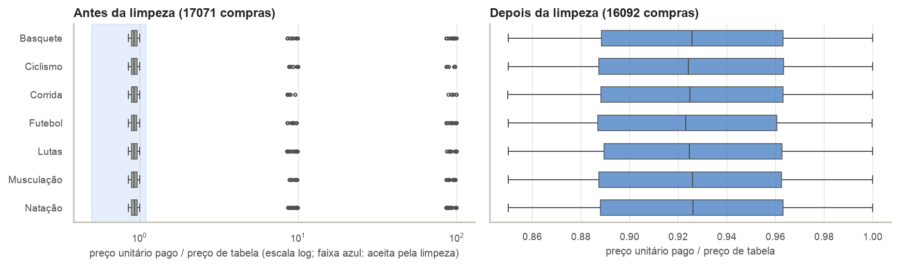
Log da transformação, da carga e da verificação (python -m src.pipeline):
2026-10-11 23:05:47 | INFO | transform | localidades | municípios do IBGE | entraram 5571 | removidos 0 | restaram 5571 2026-10-11 23:05:47 | INFO | transform | localidades | indicadores do Kaggle | entraram 5571 | removidos 0 | restaram 5571 2026-10-11 23:05:47 | INFO | transform | produtos | catálogo válido | entraram 25 | removidos 0 | restaram 25 2026-10-11 23:05:47 | INFO | transform | clientes | sem duplicatas | entraram 1545 | removidos 45 | restaram 1500 2026-10-11 23:05:47 | INFO | transform | clientes | sem inválidos | entraram 1500 | removidos 0 | restaram 1500 2026-10-11 23:05:47 | INFO | transform | clientes | município do IBGE | entraram 1500 | removidos 0 | restaram 1500 2026-10-11 23:05:47 | INFO | transform | compras | sem duplicatas | entraram 17592 | removidos 512 | restaram 17080 2026-10-11 23:05:47 | INFO | transform | compras | sem inválidos | entraram 17080 | removidos 732 | restaram 16348 2026-10-11 23:05:47 | INFO | transform | compras | integridade referencial | entraram 16348 | removidos 99 | restaram 16249 2026-10-11 23:05:47 | INFO | transform | compras | sem outliers de preço | entraram 16249 | removidos 157 | restaram 16092 2026-10-11 23:05:47 | INFO | load | estrutura recriada a partir de sql/schema.sql 2026-10-11 23:05:48 | INFO | load | staging.compras | 17592 linhas 2026-10-11 23:05:48 | INFO | load | staging.clientes | 1545 linhas 2026-10-11 23:05:48 | INFO | load | staging.produtos | 25 linhas 2026-10-11 23:05:49 | INFO | load | staging.municipios_ibge | 5571 linhas 2026-10-11 23:05:49 | INFO | load | staging.cidades_kaggle | 5573 linhas 2026-10-11 23:05:49 | INFO | load | dw.dim_localidade | 5571 linhas 2026-10-11 23:05:50 | INFO | load | dw.dim_cliente | 1500 linhas 2026-10-11 23:05:50 | INFO | load | dw.dim_produto | 25 linhas 2026-10-11 23:05:50 | INFO | load | dw.dim_data | 545 linhas 2026-10-11 23:05:51 | INFO | load | dw.fato_compras | 16092 linhas 2026-10-11 23:05:51 | INFO | verify | contagens, receita (R$ 9398980.77) e junções conferidas no PostgreSQL
As regras de limpeza têm testes automatizados (tests/test_transform.py), que rodam sem banco e sem rede:
$ python -m pytest -v tests/test_transform.py::test_para_numero_aceita_formato_brasileiro PASSED [ 9%] tests/test_transform.py::test_para_data_aceita_dois_formatos_e_rejeita_data_impossivel PASSED [ 18%] tests/test_transform.py::test_padronizar_corrige_caixa_e_espacos[ OURO ] PASSED [ 27%] tests/test_transform.py::test_padronizar_corrige_caixa_e_espacos[ouro] PASSED [ 36%] tests/test_transform.py::test_padronizar_corrige_caixa_e_espacos[Ouro ] PASSED [ 45%] tests/test_transform.py::test_padronizar_ignora_acento_e_anula_o_que_nao_reconhece PASSED [ 54%] tests/test_transform.py::test_localidades_juntam_ibge_e_kaggle_por_nome_e_uf PASSED [ 63%] tests/test_transform.py::test_localidades_usam_populacao_do_censo_quando_falta_a_estimada_e_anulam_pib_zerado PASSED [ 72%] tests/test_transform.py::test_clientes_ficam_com_uma_linha_e_codigo_do_ibge PASSED [ 81%] tests/test_transform.py::test_compras_removem_duplicata_invalido_orfao_e_outlier PASSED [ 90%] tests/test_transform.py::test_calendario_e_continuo_e_marca_fim_de_semana PASSED [100%] ============================== 11 passed in 0.20s ==============================
notebooks/01_analise_exploratoria.ipynb lê tudo do PostgreSQL e cobre qualidade do dado bruto, vendas, produtos,
clientes, localidade, churn por grupo e correlação das features com o target.
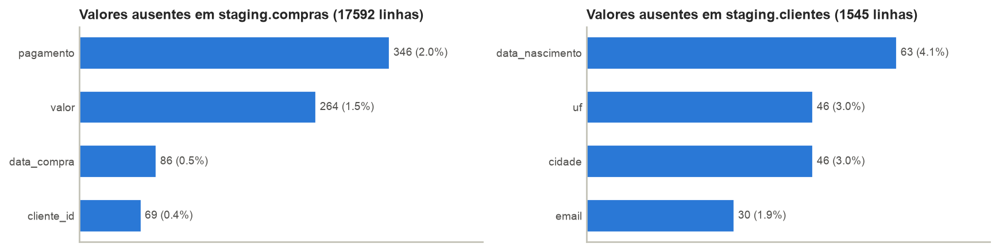
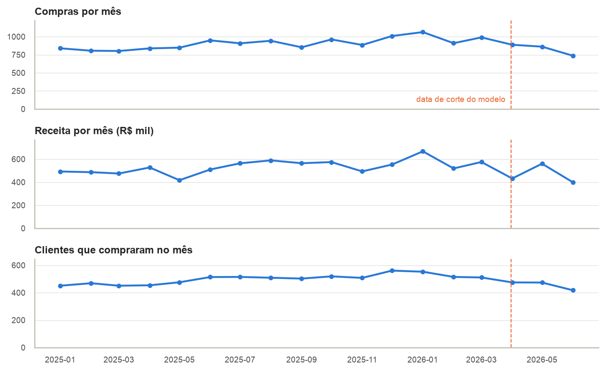
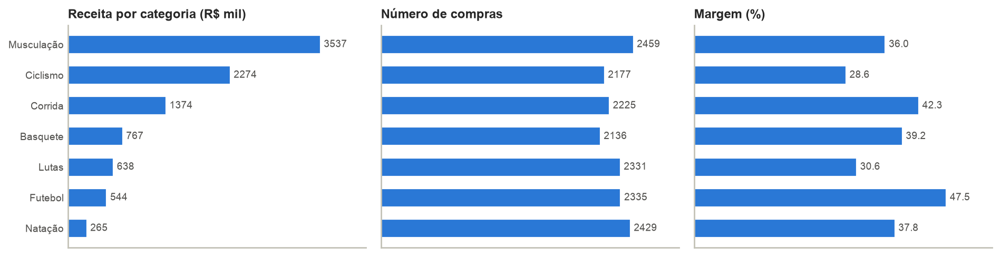
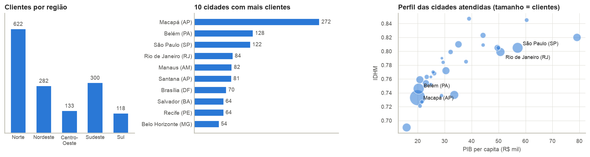
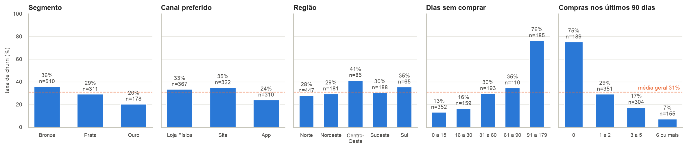
Achados (última célula do notebook):
dias_sem_comprar, qtd_compras_90d, compras_por_mes. Recência e atividade recente dominam: quem está há mais de 60 dias sem comprar tem churn de 61%.idhm e pib_per_capita (0,82); pct_compras_online e canal_Loja Física (-0,95). Os indicadores de cidade variam pouco porque são só 30 cidades.src/features.py lê a visão dw.vw_compras do PostgreSQL e monta uma linha por cliente, gravada em
ml.features_cliente.
churn = 1 se o cliente não comprou nos 90 dias depois da data de corte (31/03/2026).Clientes: 999 | features: 29 | churn: 30.8%
Treino: 799 (30.8% de churn) | Teste: 200 (31.0% de churn)
Features com valor ausente: {'capital': 33, 'idhm': 33, 'pib_per_capita': 33, 'idade': 52, 'populacao_log': 33}
| Feature | Grupo | Fonte | Como é calculada | O que representa e por que ajuda |
|---|---|---|---|---|
idade | Cadastro | Excel | Anos entre data_nascimento e a data de corte | Clientes mais jovens trocam de loja com mais facilidade. Fica nula quando o nascimento é inválido |
segmento_cod | Cadastro | Excel | Bronze = 0, Prata = 1, Ouro = 2 (encoding ordinal) | Nível no programa de fidelidade. Tem ordem, por isso vira um número só |
dias_desde_cadastro | Temporal | Excel | Dias entre data_cadastro e a data de corte | Tempo de relacionamento com a loja |
dias_sem_comprar | Temporal | CSV | Dias entre a última compra e a data de corte | Recência: quanto mais tempo parado, maior a chance de já ter abandonado |
intervalo_medio_dias | Temporal | CSV | Dias entre a primeira e a última compra, dividido por (compras - 1) | Ritmo normal do cliente. Com uma compra só, usa os dias desde essa compra |
atraso_relativo | Temporal | CSV | dias_sem_comprar / intervalo_medio_dias | Compara a pausa atual com o ritmo do próprio cliente: 60 dias parado é normal para uns e alarme para outros |
pct_compras_fim_de_semana | Temporal | CSV + dim_data | Parcela das compras feitas em sábado ou domingo | Hábito de compra (lazer no fim de semana ou rotina durante a semana) |
qtd_compras | Agregação | CSV | Número de compras até o corte | Frequência: volume de relacionamento |
total_gasto | Agregação | CSV | Soma do valor das compras até o corte | Valor monetário do cliente |
ticket_medio | Agregação | CSV | total_gasto / qtd_compras | Tamanho típico de cada compra |
categorias_distintas | Agregação | CSV + JSON | Número de categorias diferentes compradas | Quem compra de vários esportes depende mais da loja |
margem_pct | Agregação | CSV + JSON | (valor - custo) / valor, somando todas as compras | Usa o custo do catálogo. Margem baixa indica cliente que só compra em promoção |
pct_compras_online | Agregação | CSV | Parcela das compras feitas pelo Site ou pelo App | Compra online depende de entrega, que pesa mais longe do centro de distribuição |
qtd_compras_90d | Agregação | CSV | Compras nos 90 dias antes do corte | Atividade recente |
gasto_90d | Agregação | CSV | Valor gasto nos 90 dias antes do corte | Atividade recente em reais |
tendencia_compras | Agregação | CSV | qtd_compras_90d menos as compras dos 90 dias anteriores | Negativa quando o cliente está desacelerando |
compras_por_mes | Agregação | CSV | qtd_compras / meses desde a primeira compra | Frequência ajustada ao tempo de casa |
canal_* | Encoding | CSV | One-hot do canal mais usado pelo cliente (Loja Física, Site, App) | Canal preferido, sem ordem entre as opções |
regiao_* | Encoding | API IBGE | One-hot da região do município do cliente (5 colunas) | Distância do centro de distribuição. Cliente sem cidade fica com zero nas cinco |
capital | Localidade | Kaggle | 1 se o município é capital de estado | Capitais têm mais concorrência e mais oferta de lojas |
populacao_log | Localidade | Kaggle | log10 da população estimada do município | Porte da cidade, em escala logarítmica por causa de São Paulo |
idhm | Localidade | Kaggle | Índice de Desenvolvimento Humano Municipal | Indicador social da cidade do cliente |
pib_per_capita | Localidade | Kaggle | PIB per capita do município, em reais | Poder de compra médio da cidade |
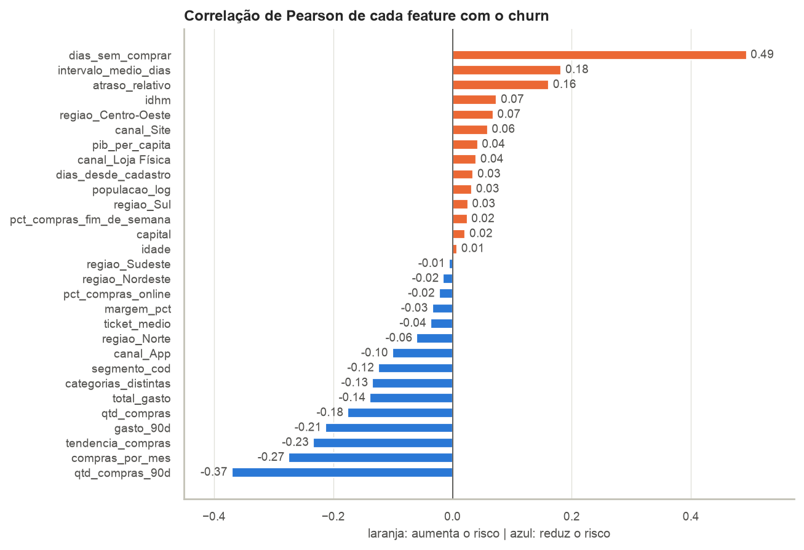
src/model.py treina três modelos de famílias diferentes e um baseline que sempre responde "não é churn". Todos
ficam em um Pipeline do scikit-learn (imputação, padronização e classificador). Regressão Logística e Random
Forest usam class_weight='balanced' para compensar o desbalanceamento. Divisão 80/20 estratificada. As colunas
CV são a média da validação cruzada (5 dobras estratificadas, só no treino); as demais são do teste.
| Modelo | F1 (CV) | Desvio (CV) | ROC AUC (CV) | Accuracy | Precision | Recall | F1 | ROC AUC |
|---|---|---|---|---|---|---|---|---|
| Regressão Logística | 0,601 | 0,043 | 0,777 | 0,785 | 0,656 | 0,645 | 0,650 | 0,790 |
| Random Forest | 0,599 | 0,050 | 0,778 | 0,785 | 0,721 | 0,500 | 0,590 | 0,789 |
| Gradient Boosting | 0,555 | 0,058 | 0,755 | 0,760 | 0,750 | 0,339 | 0,467 | 0,728 |
| Baseline (classe majoritária) | 0,000 | 0,000 | 0,500 | 0,690 | 0,000 | 0,000 | 0,000 | 0,500 |
Modelo escolhido: Regressão Logística. Critério: maior F1 médio na validação cruzada. A escolha não usa o teste, que fica só para a avaliação final.
2026-10-11 23:05:51 | INFO | features | 999 clientes ativos | 29 features | churn 30.8% | gravado em ml.features_cliente 2026-10-11 23:05:51 | INFO | modelo | Baseline (classe majoritária) | F1 (CV) 0.000 | F1 teste 0.000 | ROC AUC teste 0.500 2026-10-11 23:05:51 | INFO | modelo | Regressão Logística | F1 (CV) 0.601 | F1 teste 0.650 | ROC AUC teste 0.790 2026-10-11 23:05:53 | INFO | modelo | Random Forest | F1 (CV) 0.599 | F1 teste 0.590 | ROC AUC teste 0.789 2026-10-11 23:05:54 | INFO | modelo | Gradient Boosting | F1 (CV) 0.555 | F1 teste 0.467 | ROC AUC teste 0.728 2026-10-11 23:05:55 | INFO | modelo | escolhido: Regressão Logística | salvo em models/modelo_churn.pkl (3 KB) 2026-10-11 23:05:55 | INFO | resultado | Regressão Logística | F1 0.650 | recall 0.645 | precision 0.656 | ROC AUC 0.790 | accuracy 0.785 2026-10-11 23:05:55 | INFO | === fim do pipeline em 8.9 s ===
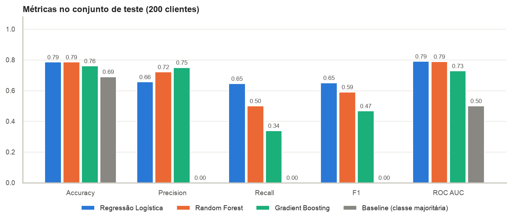
A métrica principal é o F1 da classe churn, porque a accuracy engana com classes desbalanceadas: o baseline acerta 0,690 sem encontrar nenhum churn. Recall mede quantos churns o modelo encontra, precision mede quantos alertas estão certos e ROC AUC mede a qualidade do ranking de risco.
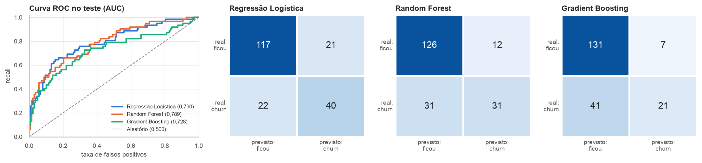
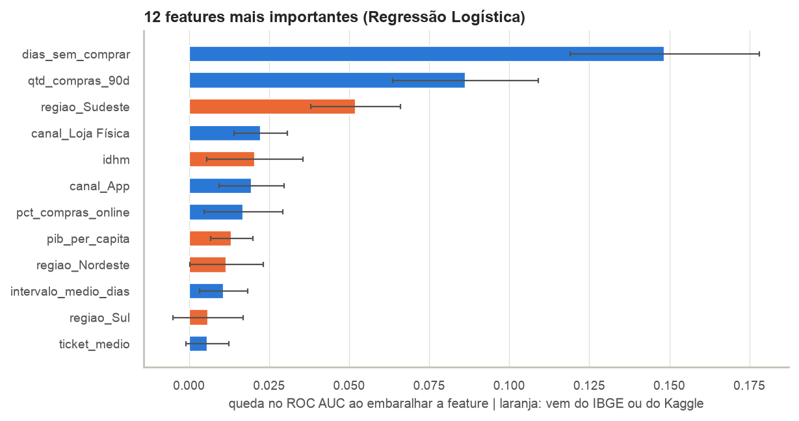
Faixas de risco. Clientes do teste agrupados pela probabilidade prevista. A taxa real de churn sobe de uma faixa para a outra, sinal de que o modelo ordena bem.
risco | clientes | deram_churn | taxa_real_pct -------+----------+-------------+--------------- baixo | 115 | 17 | 14.8 médio | 50 | 21 | 42.0 alto | 35 | 24 | 68.6 (3 rows)
Ponto de corte. Baixar o corte encontra mais churns ao custo de mais alarmes falsos.
| Corte | Accuracy | Precision | Recall | F1 | Acionados |
|---|---|---|---|---|---|
| 0,3 | 0,620 | 0,439 | 0,806 | 0,568 | 114 |
| 0,4 | 0,715 | 0,529 | 0,726 | 0,612 | 85 |
| 0,5 | 0,785 | 0,656 | 0,645 | 0,650 | 61 |
| 0,6 | 0,775 | 0,673 | 0,532 | 0,595 | 49 |
| 0,7 | 0,755 | 0,686 | 0,387 | 0,495 | 35 |
O que as fontes externas acrescentam. O modelo escolhido foi treinado de novo sem as features de localidade e comparado na validação cruzada:
| Features usadas | Quantidade | F1 (CV) | Desvio (CV) | ROC AUC (CV) |
|---|---|---|---|---|
| Só fontes internas (CSV, Excel, JSON) | 20 | 0,596 | 0,050 | 0,785 |
| Internas + região (API IBGE) | 25 | 0,595 | 0,048 | 0,780 |
| Todas as fontes (com Kaggle) | 29 | 0,601 | 0,043 | 0,777 |
As métricas também ficam no PostgreSQL (ml.metricas_modelo) e as previsões do teste em
ml.previsoes_teste:
7. Métricas dos modelos gravadas pelo pipeline
modelo | escolhido | cv_f1 | accuracy | precision | recall | f1 | roc_auc
-------------------------------+-----------+--------+----------+-----------+--------+--------+---------
Regressão Logística | t | 0.6010 | 0.7850 | 0.6557 | 0.6452 | 0.6504 | 0.7900
Random Forest | f | 0.5991 | 0.7850 | 0.7209 | 0.5000 | 0.5905 | 0.7886
Gradient Boosting | f | 0.5554 | 0.7600 | 0.7500 | 0.3387 | 0.4667 | 0.7276
Baseline (classe majoritária) | f | 0.0000 | 0.6900 | 0.0000 | 0.0000 | 0.0000 | 0.5000
(4 rows)
Conclusões (última célula do notebook final):
dias_sem_comprar e qtd_compras_90d, bem à frente das demais. Recência e atividade recente são os sinais mais fortes, como a análise exploratória indicava.regiao_Sudeste, idhm, pib_per_capita aparecem entre as 12 mais importantes), mas sem elas chega ao mesmo resultado: o comportamento de compra explica muito mais do que a cidade. O valor da integração ficou na análise (receita, margem e churn por região) e não no modelo.src/gerar_dados.py (segmento, canal, idade e região); só o IBGE e o Kaggle são dados reais. O abandono simulado tem um componente aleatório grande, o que limita o teto de qualquer modelo. São apenas 30 cidades, então os indicadores do Kaggle quase identificam a cidade. A avaliação usa uma única data de corte.O repositório é público, com commits atômicos escritos em português no padrão Conventional Commits
(feat, fix, test, docs, chore). O README.md traz descrição,
organização, diagrama do banco, instruções de execução (PostgreSQL local ou Docker) e resultados.
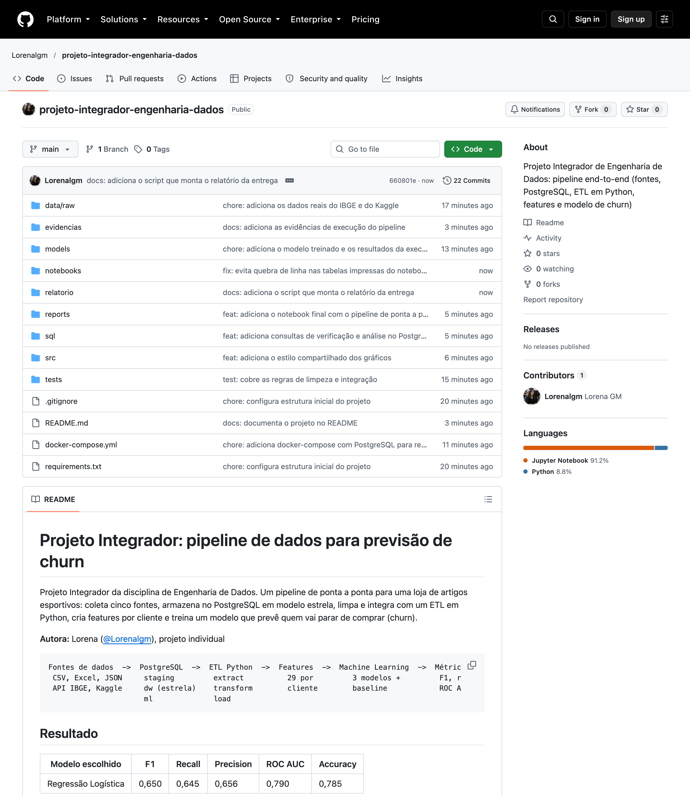
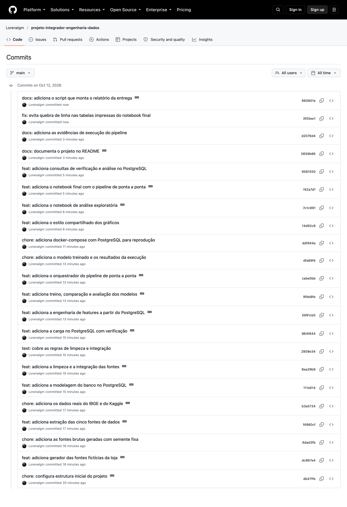
$ git log --oneline --reverse db47ffe chore: configura estrutura inicial do projeto dc867e4 feat: adiciona gerador das fontes fictícias da loja 6dad3fb chore: adiciona as fontes brutas geradas com semente fixa f4960cf feat: adiciona extração das cinco fontes de dados b3a5734 chore: adiciona os dados reais do IBGE e do Kaggle 111e614 feat: adiciona a modelagem do banco no PostgreSQL 8ea29b9 feat: adiciona a limpeza e a integração das fontes 2808e34 test: cobre as regras de limpeza e integração 964f844 feat: adiciona a carga no PostgreSQL com verificação 5991cb5 feat: adiciona a engenharia de features a partir do PostgreSQL 9fbb8fe feat: adiciona treino, comparação e avaliação dos modelos cabe0bb feat: adiciona o orquestrador do pipeline de ponta a ponta dfa89f4 chore: adiciona o modelo treinado e os resultados da execução ddf944a chore: adiciona docker-compose com PostgreSQL para reprodução 14d92c8 feat: adiciona o estilo compartilhado dos gráficos 7c1c991 feat: adiciona o notebook de análise exploratória f42a7d1 feat: adiciona o notebook final com o pipeline de ponta a ponta 9581550 feat: adiciona consultas de verificação e análise no PostgreSQL 5659b86 docs: documenta o projeto no README d2076d4 docs: adiciona as evidências de execução do pipeline 3f05ee1 fix: evita quebra de linha nas tabelas impressas do notebook final 660801e docs: adiciona o script que monta o relatório da entrega
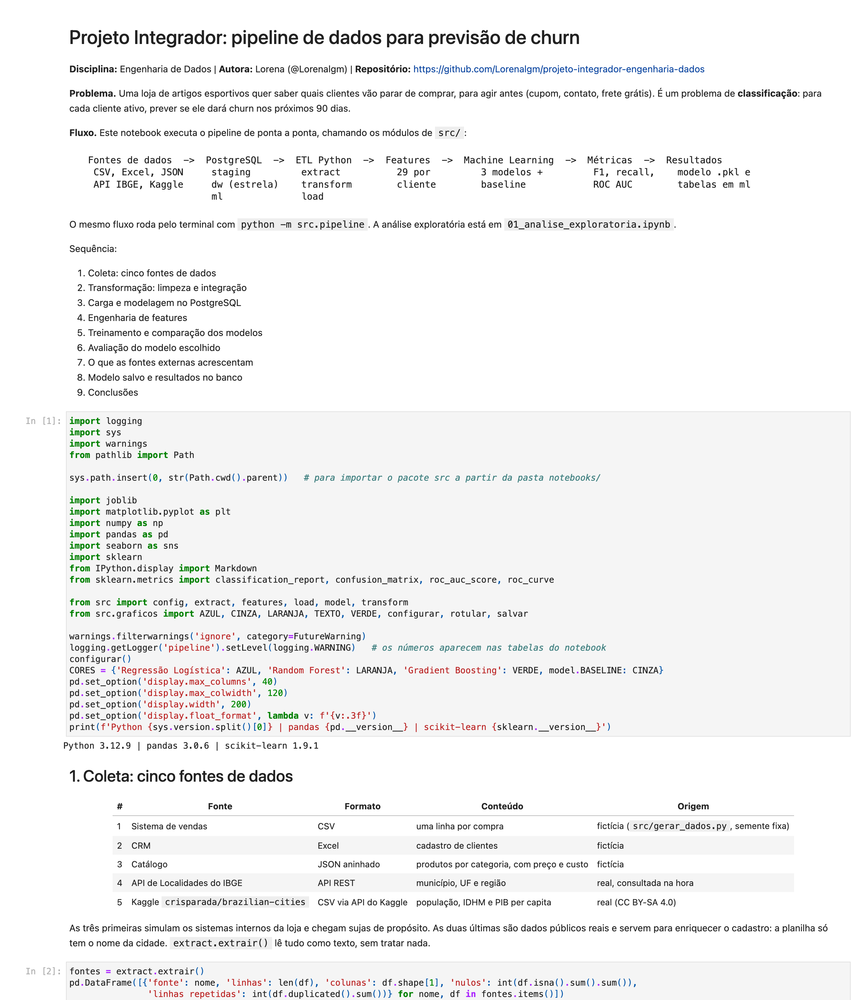
| Item do checklist | Onde está |
|---|---|
| Pelo menos 2 fontes de dados | Cinco fontes: data/raw/, src/extract.py (seção 1) |
| Dados armazenados e modelados no PostgreSQL | sql/schema.sql, schemas staging, dw e ml (seção 2) |
| Processo ETL em Python | src/extract.py, src/transform.py, src/load.py, src/pipeline.py (seção 3) |
| Features preparadas e documentadas | src/features.py, reports/documentacao_features.csv (seção 5) |
| Modelo de classificação treinado | src/model.py, models/modelo_churn.pkl (seção 6) |
| Métricas do modelo apresentadas | reports/metricas.json, reports/comparacao_modelos.csv, tabela ml.metricas_modelo (seções 6 e 7) |
| Notebook de análise exploratória | notebooks/01_analise_exploratoria.ipynb (seção 4) |
| README com instruções claras | README.md |
| Repositório Git acessível | https://github.com/Lorenalgm/projeto-integrador-engenharia-dados (público, seção 8) |
| Notebook final (.ipynb) | notebooks/02_projeto_integrador.ipynb |